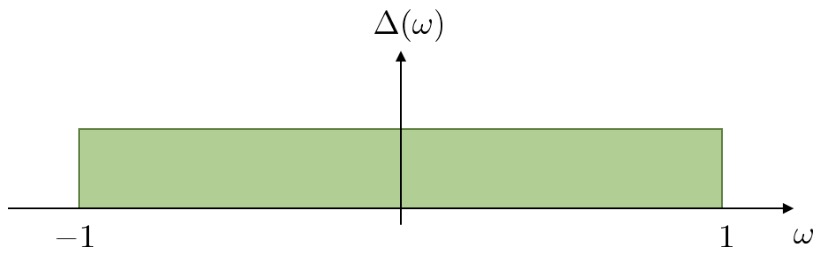
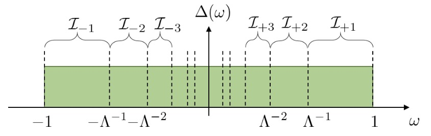
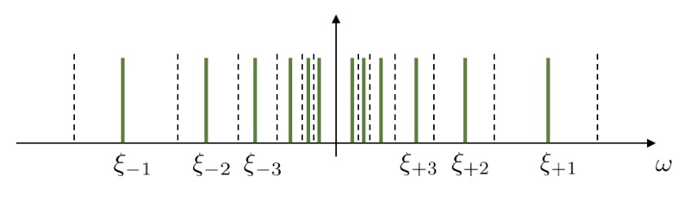
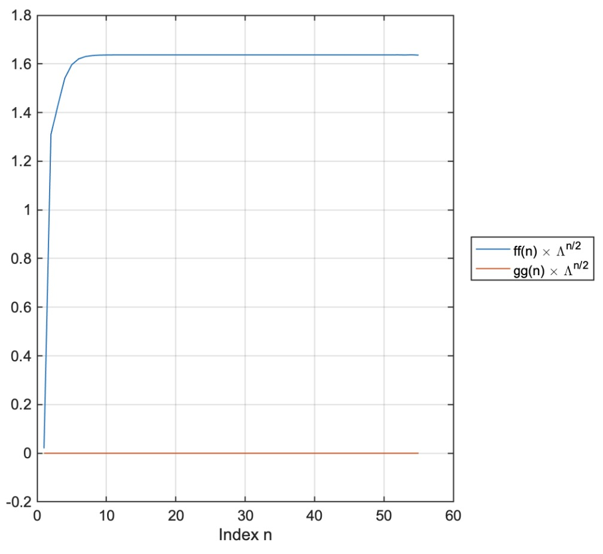
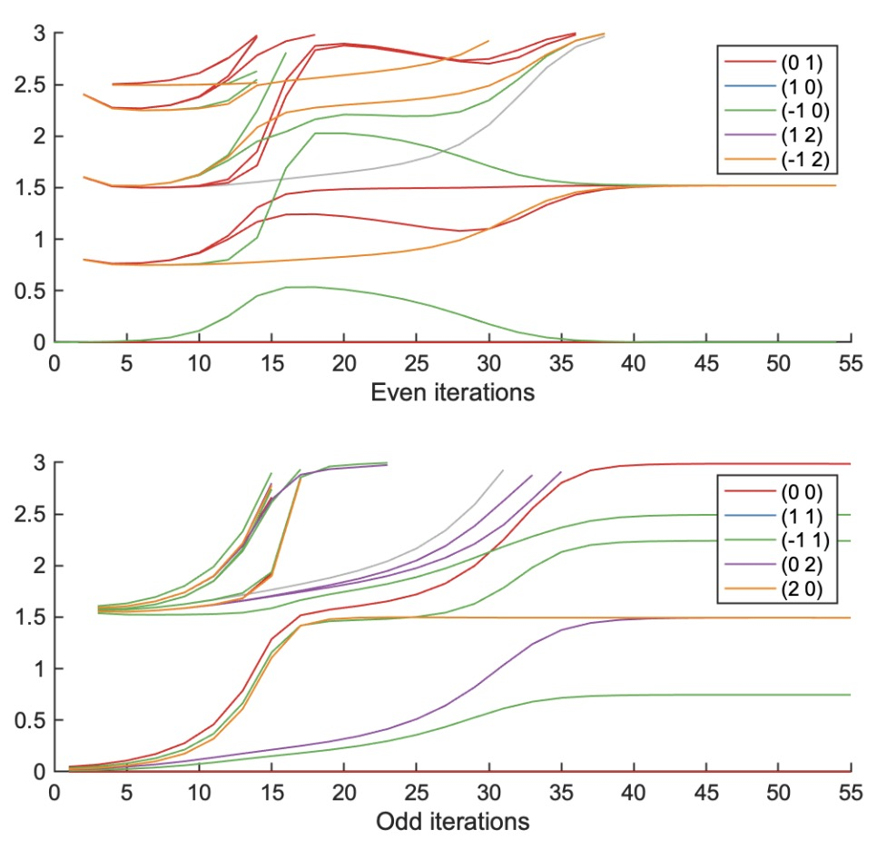
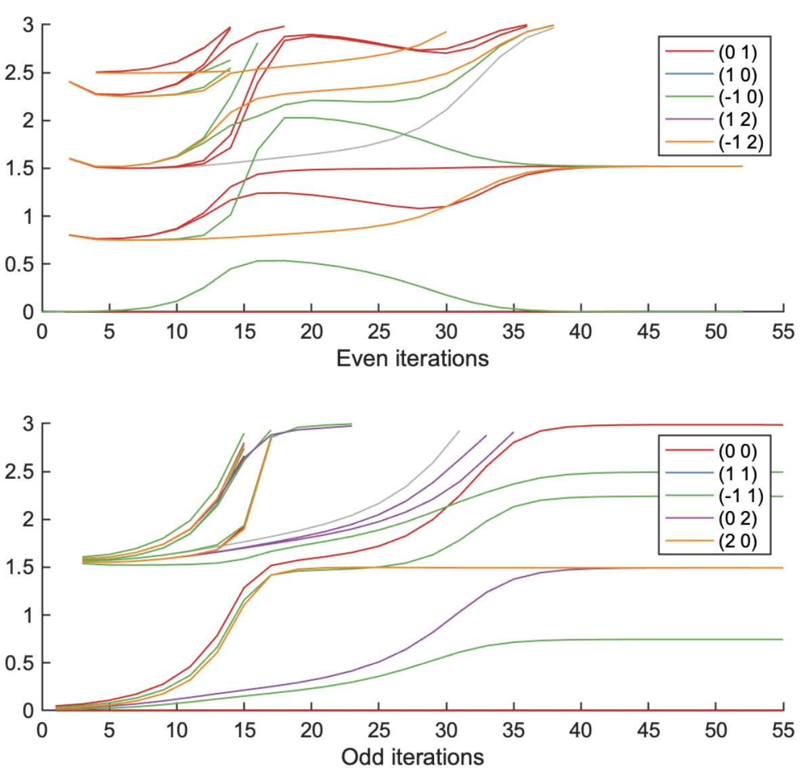
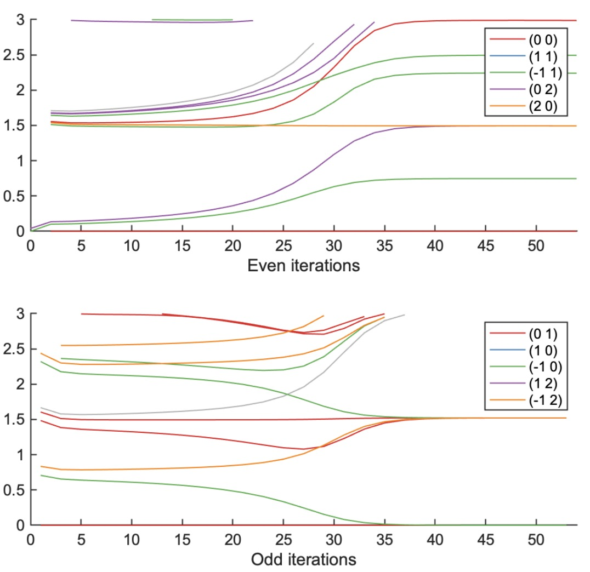

NRG-1: Energy Flow
Author: QSpace version written by Andreas Gleis
Numerical renormalization group (NRG) is a method for solving quantum impurity systems. Kenneth G. Wilson has itnvented NRG to solve the Kondo problem which was not solvable then. The invention of NRG, indeed, is a part of his Nobel prize citation. NRG is an ancestor of all numerical methods having "renormalization group" in their names.
Logarithmic discretization of bath
The starting point of the methods we covered before, such as DMRG and iTEBD, is the Hamiltonian of a system which is already discrete, such as chain. On the other hand, an NRG calculation starts from discretizing the continuous system.
Here we consider an example of quantum impurity system, where the impurity is a spinful fermionic level and the bath consists of non-interacting spinful fermions. The Hamiltonian is given by
where \(s = {\uparrow},{\downarrow}\) is spin, \(\epsilon_k\) is the energy of bath fermion of momentum \(k\), and \(v_k\) is the coupling amplitude between the impurity level (to which a particle of spin \(s\) is added by applying \(\hat{d}_s^\dagger\)) and the bath level of momentum \(k\). The coupling between the impurity and the bath is characterized by the hybridization function,
In this demonstration, we choose the Anderson impurity and the "box-shaped" hybridization function,
where \(\hat{n}_{ds} = \hat{d}_{s}^\dagger \hat{d}_s\) is a number operator at the impurity, \(U\) is the local Coulomb interaction, \(\epsilon_d\) is the impurity energy level, \(\Gamma\) is hybridzation strength, and \(D\) is the half-bandwidth of the bath. This case is called single-impurity Anderson model (SIAM). Throughout this tutorial, we set \(D=1\) as an energy unit, without loss of generality.
The "box-shaped" hybridization function would look like:

To discretize this, we consider a logarithmic discretization parameter \(\Lambda > 1\). The logarithmic frequency grid \(\pm \Lambda^{-n}\) splits the whole bandwidth \(\omega \in [-1, 1]\) into the intervals \(\mathcal{I}_{\pm n}\) that are defined by \(\mathcal{I}_{+n} = [\Lambda^{-n}, \Lambda^{-n+1}]\) and \(\mathcal{I}_{-n} = [-\Lambda^{-n+1}, -\Lambda^{-n}]\).

The part of the bath on each interval \(\mathcal{I}_{\pm n}\) is replaced by a discrete level at \(\omega = \xi_{\pm n}\) that is coupled to the impurity with amplitude \(\gamma_{\pm n}\).

The discretized Hamiltonian is written by
Each discretized bath level (to which a particle of spin \(s\) is added by applying \(\hat{a}_{\pm n, s}^\dagger\)) represents the part of the bath on an interval \(\mathcal{I}_{\pm n}\). Therefore the coupling strength of the level should be the same as the integrated hybridazation strength over the inteval,
While the coupling amplitude \(\gamma_{\pm n}\) is unambigously determined, there are several different ways to determine the discretized level position \(\xi_{\pm n}\). Here we use the Campo–Oliveira scheme V. L. Campo and L. N. Oliveira, Phys. Rev. B 72, 104432 (2005), which defines the level position \(\xi_{\pm n}\) as
(This way of determining \(\xi_{\pm n}\) is better than Wilson's original way. There is a more advanced scheme, but it is harder to implement. That's why we use the Campo–Oliveira scheme here.)
The discretized Hamiltonian \(H_\mathrm{imp} + H_\mathrm{hyb}^\mathrm{star} + H_\mathrm{bath}^\mathrm{star}\) is so-called star-geometry Hamiltonian. The impurity level and the discretized bath levels (as vertices of a graph), which are coupled via hopping (as edges of the graph), can be depicted as a star graph.
The code implementing logarithmic discretization described above can be downlodaed doCLD.m
you can run the following demonstration for verifying the impelementation:
clear
Gamma = 8e-5*pi; % hybridization strength
% NRG parameters
Lambda = 2.5; % discretization parameter
N = 55; % length of the Wilson chain
[ff,gg] = doCLD([-1 1],[1 1]*Gamma/pi,Lambda,N);
The hopping amplitudes |ff| decay exponentianlly, while the on-site energies |gg| are zeros up do double precision. To see this, we rescale the values with factors \(\Lambda^{n/2}\). [Quick exercise: Why \(\Lambda^{n/2}\), not \(\Lambda^n\)? We started from the discretization grid of \(\pm \Lambda^{-n}\), so it might look weird to have factor 1/2 in the exponent; but of course, there is a good reason.]
figure;
plot([ff gg].*(Lambda.^((1:numel(ff)).'/2)), ...
'LineWidth',1);
set(gca,'FontSize',13,'LineWidth',1);
grid on;
xlabel('Index n');
legend({'ff(n) \times \Lambda^{n/2}', ...
'gg(n) \times \Lambda^{n/2}'}, ...
'Location','eastoutside');

The first elements of |ff| deviate from the exponential dependence, as we see the deviation from the horizontal line. They come from the specific details of the hybridization function. For example, the square of ff(1) is equivalent to the integral of the hybridization,
Lanczos tridiagnolization
The star-geometry Hamiltonian is \(H_\mathrm{imp} + H_\mathrm{hyb}^\mathrm{star} + H_\mathrm{bath}^\mathrm{star}\) is mapped onto the Wilson chain Hamiltonian, via the Lanczos tridiagonalization. The Lanczos method (which is implemented, for example, in DMRG/eigs_1site.m in the context of DMRG) first constructs a tridiagonal matrix representation of the input matrix constrained within the Krylov space, and then diagonalizes the tridiagonal matrix to obtain the ground state. The Lanczos tridiagonalization indicates the first part of this process. Here in the mapping onto the Wilson chain, we consider the tridiagonal matrix representation of the quadratic (i.e., single-particle) terms of the bath and the hybridization, without the quartic (i.e., interacting) impurity Hamiltonian.
The Wilson chain Hamiltonian for the SIAM is given by
Note that the impurity Hamiltonian \(H_\mathrm{imp}\) is not changed along the logarithmic discretization and the tridiagonalizatoin. The Wilson chain is in principle semi-infinite, but in practice we consider a large but finite length. The length \(N\) sets in the minimum energy scale \(\sim \Lambda^{-N/2}\) to consider.
We will solve this one-dimensional system with the iterative diagonalization.
The code implementing logarithmic discretization described above can be downlodaed NRG_IterDiag.m
This NRG style of the iterative diagonalization differs from the iterative diagonalization covered in Examples in that (i) the Hamiltonian is rescaled by the energy scale factors \(\sim \Lambda^{-n/2}\) and (ii) the energy eigenvalues are shifted so that the lowest energy eigenvalue becomes zero. Other than these, it is the same iterative diagonalization.
As a demonstration of the completed iterative diagonalization, we apply it to the SIAM.
% Hamiltonian parameters
U = 4e-3; % Coulomb interaction at the impurity
epsd = -U/2; % impurity on-site energy
% NRG parameter
Nkeep = 300;
% symmetries
symstr = 'Acharge,SU2spin'; % U(1) charge and SU(2) spin
% symstr = 'Acharge,Aspin'; % U(1) charge and U(1) spin
% Construct local operators
[F,Z,S,I] = getLocalSpace('FermionS',symstr,'NC',1);
[F,Z,S,EF] = setItag('s00','op',F,Z,S,I.E);
% particle number operator
NF = QSpace;
for itF = 1:numel(F)
NF(itF) = contract(F(itF),'!2*',F(itF));
end
% Impurity Hamiltonian
H0 = U/2*sum(NF)*(sum(NF)-1) + epsd*sum(NF) + 1e-33*EF;
% ket tensor for the impurity
A0 = getIdentity(setItag('L00',getvac(EF,1)),1,EF,1,'K00',[1,3,2]);
H0 = contract(A0,'!2*',{A0,H0});
% same hopping amplitude and on-site energies for all flavors
ff = repmat(ff,[1,numel(F)]);
gg = repmat(gg,[1,numel(F)]);
% iterative diagonalization
Inrg = NRG_IterDiagQS(H0,A0,Lambda,ff,F,gg,NF,Z,Nkeep);
Energy flow diagram
NRG provides a method to analyze the spectrum obtained along the iterative diagonalization. Let's plot the lowest-lying (many-body) energy levels. We plot the results from even iterations and those from odd iterations separately. The plotting is handled by the function plotEQS|.m|. Please have a look at the code to get an idea how the data from the iterative diagonalization is prepared to finally plot the flow diagram.

These plots are called energy flow diagram or finite-size energy spectra. The name "flow" literally comes from that the lines flow from one regime to the other. There are three regions (iterations 1--10; 17--25; 35--55) connected via two crossovers. These regions correspond to different fixed points: free orbital, local moment, and strong coupling. The strong-coupling fixed-point regime exhibits prominent plateau of the energy levels.
Exercise: Reproduce lowest-lying energies in the strong-coupling regime by fixed-point Hamiltonians
Let's consider iteration 54 in the strong-coupling fixed-point regime.. Their lowest-lying energies, including all degenerate levels, are:
E = eigQS(diag(Inrg.HK{54}));
EKodd = [];
if size(E,2) > 1
for itE = 1:size(E,1)
EKodd = [EKodd;repmat(E(itE,1),[E(itE,2),1])];
end
else
EKodd = E;
end
fprintf([sprintf('%.4f, ',EKodd(1:5).'),'\n', ...
sprintf('%.4f, ',EKodd(6:11).'),'...\n']);
E = eigQS(diag(Inrg.HK{55}));
EKeven = [];
if size(E,2) > 1
for itE = 1:size(E,1)
EKeven = [EKeven;repmat(E(itE,1),[E(itE,2),1])];
end
else
EKeven = E;
end
fprintf([sprintf('%.4f, ',EKeven(1:4).'),'\n', ...
sprintf('%.4f, ',EKeven(5:12).'),'\n', ...
sprintf('%.4f, ',EKeven(13:20).'),'...\n']);
There are 4-fold and 16-fold degeneracies, up to numerical noise of \(O(10^{-6})\). Reproduce these (many-body) energy values by considering strong-coupling fixed-point Hamiltonians. (Hint: The fixed-point Hamiltonians are single-particle Hamiltonians, effectively!)
Solution to Exercise: Reproduce lowest-lying energies in the strong-coupling regime by fixed-point Hamiltonians
Let's perform the iterative diagonalization first.
clear
% Hamiltonian parameters
U = 4e-3; % Coulomb interaction at the impurity
epsd = -U/2; % impurity on-site energy
Gamma = 8e-5*pi; % hybridization strength
% NRG parameters
Lambda = 2.5; % discretization parameter
N = 55; % length of the Wilson chain
Nkeep = 300;
% Wilson chain
[ff,gg] = doCLD([-1 1],[1 1]*Gamma/pi,Lambda,N);
% symmetries
symstr = 'Acharge,SU2spin'; % U(1) charge and SU(2) spin
% symstr = 'Acharge,Aspin'; % U(1) charge and U(1) spin
% Construct local operators
[F,Z,S,I] = getLocalSpace('FermionS',symstr,'NC',1);
[F,Z,S,EF] = setItag('s00','op',F,Z,S,I.E);
% particle number operator
NF = QSpace;
for itF = 1:numel(F)
NF(itF) = contract(F(itF),'!2*',F(itF));
end
% Impurity Hamiltonian
H0 = U/2*sum(NF)*(sum(NF)-1) + epsd*sum(NF) + 1e-33*EF;
% ket tensor for the impurity
A0 = getIdentity(setItag('L00',getvac(EF,1)),1,EF,1,'K00',[1,3,2]);
H0 = contract(A0,'!2*',{A0,H0});
% same hopping amplitude and on-site energies for all flavors
ff = repmat(ff,[1,numel(F)]);
gg = repmat(gg,[1,numel(F)]);
% iterative diagonalization
Inrg = NRG_IterDiagQS(H0,A0,Lambda,ff,F,gg,NF,Z,Nkeep);
Then we plot the energy flow diagram:

The lowest-lying energies at iteration 54 are:
E = eigQS(diag(Inrg.HK{54}));
EKodd = [];
if size(E,2) > 1
for itE = 1:size(E,1)
EKodd = [EKodd;repmat(E(itE,1),[E(itE,2),1])];
end
else
EKodd = E;
end
fprintf([sprintf('%.4f, ',EKodd(1:5).'),'\n', ...
sprintf('%.4f, ',EKodd(6:11).'),'...\n']);
The fixed-point description for this iteration is that the impurity (site 1) and the first bath site (site 2) are strongly bound and the rest of the chain (from site 3 to site 54) are decoupled from the dimer. So the excitation spectrum is obtained by considering the lowest excitations of the single-particle Hamiltonian for the part from site 3 to site 54, having even number of sites.
Hsp = diag(ff(3:53),1);
Hsp = Hsp + Hsp' + diag([0;gg(3:53)]);
Hsp = Hsp/Inrg.EScale(54); % rescale energy scale
Esp = eig((Hsp+Hsp')/2);
Esp = sort(Esp,'ascend');
% many-body energy values
Evs = [0; ... % ground-state
Esp(end/2+1); Esp(end/2+1); ...
% lowest one-particle excitation, spin-up/down
-Esp(end/2); -Esp(end/2); ...
% lowest one-hole excitation, spin-up/down
Esp(end/2+1)-Esp(end/2); Esp(end/2+1)-Esp(end/2); ...
Esp(end/2+1)-Esp(end/2); Esp(end/2+1)-Esp(end/2); ...
% particle-hole pair excitation, up/down * up/down
Esp(end/2+1)*2; ...
% two-particle exciation (up + down)
-Esp(end/2)*2];
% two-hole exciation (up + down)
fprintf([sprintf('%.4f, ',Evs(1:5).'),'\n', ...
sprintf('%.4f, ',Evs(6:11).'),'...\n']);
On the other hand, the lowest-lying energies for iteration 55 have more degeneracies,
E = eigQS(diag(Inrg.HK{55}));
EKeven = [];
if size(E,2) > 1
for itE = 1:size(E,1)
EKeven = [EKeven;repmat(E(itE,1),[E(itE,2),1])];
end
else
EKeven = E;
end
fprintf([sprintf('%.4f, ',EKeven(1:4).'),'\n', ...
sprintf('%.4f, ',EKeven(5:12).'),'\n', ...
sprintf('%.4f, ',EKeven(13:20).'),'...\n']);
The 4-fold and 16-fold degeneracies can be seen as that extra factor 4 is multiplied to the degeneracies of the 1-fold and 4-fold degeneratices in the case of iteration 54, putting aside different values of energies. This factor 4 can be understood by the fixed-point Hamiltonian as well. The part of the chain decoupled from the strongly coupled dimer has odd number of sites. So it has a zero mode:
Hsp = diag(ff(3:54),1);
Hsp = Hsp + Hsp' + diag([0;gg(3:54)]);
Hsp = Hsp/Inrg.EScale(55); % rescale energy scale
Esp = eig((Hsp+Hsp')/2);
Esp = sort(Esp,'ascend');
fprintf('%.4f\n',Esp((end+1)/2));
There are four Fock states regarding the zero mode (empty, spin-up, spin-down, doubly occupied), having all the same zero energy. So it introduces factor 4 to the degeneracies. Factoring out the degrees of freedom of this zero mode, we construct the lowest-lying energies at iteration 55 as for iteration 54:
% many-body energy values
Evs = [0; ... % ground-state
Esp((end+1)/2+1); Esp((end+1)/2+1); ...
% lowest one-particle excitation, spin-up/down
-Esp((end+1)/2-1); -Esp((end+1)/2-1); ...
% lowest one-hole excitation, spin-up/down
Esp((end+1)/2+1)-Esp((end+1)/2-1); ...
Esp((end+1)/2+1)-Esp((end+1)/2-1); ...
Esp((end+1)/2+1)-Esp((end+1)/2-1); ...
Esp((end+1)/2+1)-Esp((end+1)/2-1); ...
% particle-hole pair excitation, up/down * up/down
Esp((end+1)/2+1)*2; ...
% two-particle exciation (up + down)
-Esp((end+1)/2-1)*2];
% two-hole exciation (up + down)
fprintf([sprintf('%.4f, ',Evs(1:5).'),'\n', ...
sprintf('%.4f, ',Evs(6:11).'),'...\n']);
Single-Impurity Kondo model (SIKM)
We can derive the Wilson chain Hamiltonian \(H_\mathrm{SIKM}^\mathrm{chain}\) for the single-impurity Kondo model (SIKM), from the chain Hamiltonian of the SIAM \(H_\mathrm{SIAM}^\mathrm{chain}\) shown above. By applying the Schrieffer-Wolff transformation to the impurity site (on which \(\hat{d}_s\) acts) and the first bath site (on which \(\hat{f}_{0,s}\) acts), we obtain
Here \(\hat{\vec{S}}_d\) is the spin operator acting on the impurity site,
is the spin operator acting on the first bath site, \(\vec{\sigma} = [\sigma_x, \sigma_y, \sigma_z]\) is the vector of Pauli matrices, and
is the Kondo coupling strength. For particle-hole symmetric case \(\epsilon_d = -U/2\) which we considered above, it becomes
The bath term \(H_\mathrm{bath}\) is the same as in the SIAM case. Note that the impurity site in the SIKM has dimension 2, while that in the SIAM has 4; the doubly occupied and the empty states are "integrated out" by the Schrieffer-Wolff transformation. Refer to J. R. Schrieffer and P. A. Wolff, Phys. Rev. 149, 491 (1966) for the details of the Schrieffer-Wolff transformation.
Exercise: Perform the iterative diagonalization of this chain Hamiltonian for the SIKM, with the value of \(J\) corresponding to the choice of parameters \(U\), \(\epsilon_d\), and \(\Gamma\) above. (Again \(D = 1\) is the energy unit.) Compare the energy flow diagram with the SIAM result.
(Hint: You can do it by changing H0, A0, and ff only, with using the same function NRG_IterDiagQS!)
Solution to Exercise: Single-impurity Kondo model
In the example of the SIAM, we set the first leg (i.e., left leg) of A0 as a dummy leg for vacuum and the second leg (i.e., bottom leg) for the Anderson impurity. The impurity Hamiltonian \(H_\mathrm{imp}\) involves only one fermionic site (i.e., \(d\) level). The rest of the chain Hamiltonian is the hopping and on-site terms that are generated within NRG_IterDiagQS.
On the other hand, in the SIKM, the exchange interaction \(H_\mathrm{exc}\) acts on two sites: a spin site for \(\hat{\vec{S}}_d\) and a spinful fermionic site for \(\hat{\vec{S}}_0\). The latter site is the first bath site, and coupled with the other fermionic sites via particle hopping that can be generated inside NRG_IterDiagQS.
Therefore, to use the same function NRG_IterDiagQS for the SIKM, we associate the first leg of A0 with the spin site for \(\hat{\vec{S}}_d\) and its second leg with the spinful fermionic site for \(\hat{\vec{S}}_0\). Accordingly, we shift the hopping amplitudes and on-site energies by one site to the left, as the second leg of A0 involves the first bath site.
clear
% Hamiltonian parameters
U = 4e-3; % Coulomb interaction at the impurity
epsd = -U/2; % impurity on-site energy
Gamma = 8e-5*pi; % hybridization strength
J = 8*Gamma/pi/U; % Kondo coupling strength
% NRG parameters
Lambda = 2.5; % discretization parameter
N = 55; % length of the Wilson chain
Nkeep = 300;
% Wilson chain
[ff,gg] = doCLD([-1 1],[1 1]*Gamma/pi,Lambda,N);
ff = ff(2:end); % shift to the left by one site
gg = gg(2:end);
Here ff(1), ff(2), ff(3), ... are equal to ff(2), ff(3), ff(4), ... for the ff vector in the SIAM case. Note that the first element ff(1) in the SIAM case depends on the hybridization strength \(\Gamma\); it is absorbed into the definition of \(J\) after the Schrieffer-Wolff transformation.
Then run the iterative diagonalization, and plot the energy flow diagram.
% Construct local operators
[F,Z,S,I] = getLocalSpace('FermionS','Acharge,SU2spin','NC',1);
[F,Z,S,EF] = setItag('s00','op',F,Z,S,I.E);
[Ss,Is] = getLocalSpace('Spin',1/2);
[Ss,Is] = setItag('L00','op',Ss,Is.E);
% attach U(1) charge symmetry label to spin
Ss = appendScalarSymmetry(Ss,'A','pos',1);
Is = appendScalarSymmetry(Is,'A','pos',1);
% particle number operator
NF = QSpace;
for itF = 1:numel(F)
NF(itF) = contract(F(itF),'!2*',F(itF));
end
% Impurity Hamiltonian
H0 = J*contract(Ss,S,'*');
% ket tensor for the impurity
A0 = getIdentity(Is,1,EF,1,'K00',[1,3,2]);
H0 = contract(A0,'!2*',{A0,H0}) + 1e-33*contract(A0,'!2*',A0);
% iterative diagonalization
Inrg = NRG_IterDiagQS(H0,A0,Lambda,ff,F,gg,NF,Z,Nkeep);
Then plot the energy flow:

The energy flow diagram looks similar with the diagram for the SIAM, especially the last crossovers and the spectrum at the last iterations in the strong-coupling fixed-point regime. There are two differences as well:
The panel for even (odd) iterations in the SIKM case look similar to the panel for odd (even) iterations in the SIAM. It is because we have shifted the chain sites by one to the left. While there are two crossovers in the SIAM, here in the SIKM there is only one crossover, which is from the local moment regime to the Kondo regime.